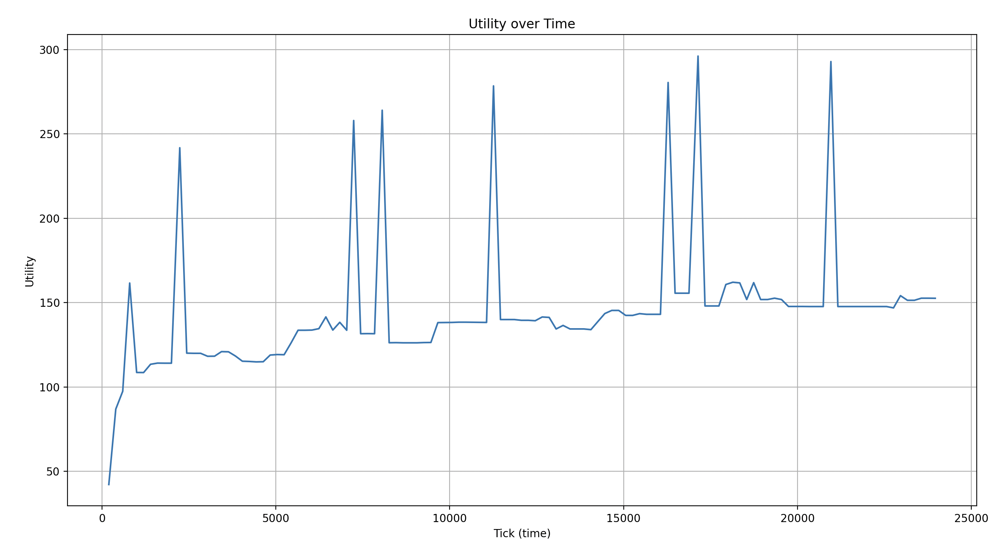
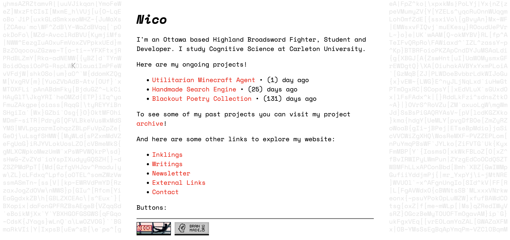

Hello! 👋
Here's a quick update regarding what I've been up to in February!
Utilitarian Minecraft Agent
My ongoing research project with Carleton University is about the utility ("goodness") of time spent planning. When an agent is planning, it isn't taking any action. So how much should an agent plan before taking actions?
I'm investigating this by creating 3 different types of agents which play Minecraft:
- Free Agent: Executes random plans without considering their utility
- Satisficing Agent: Executes the first plan that is expected to yield positive utility
- Maximizing Agent: Generates new plans until one meets a very high threshold of expected utility, and executes that one
Both the satisficing and maximizing agents have an ethical module that evaluates the expected utility of their plans, and either instructs them to execute a given one, or to make new plans.
I'm currently in the bug-fixing iteration cycle. The agents play the game, and most things are working. But from time to time, the agents will crash for some random reason (which I fix and then run the next test trial)
The current bug I'm trying to fix, is that the code that evaluates the utility of the Minecraft world throughout the play session, will randomly output a much higher number then what it had been outputting before. Which results in random spikes of utility throughout the play session, which shouldn't be there.

In any case, I can feel this project is moving towards a conclusion. You can read more about this project on my new project page!
Website Redesign
As I've continued to work on my search engine I've been exploring more of the "small internet". I noticed my old site had very few outgoing links, and generally felt somewhat bloated. A few months ago I had decided to rewrite my personal website using the React framework. That was way overkill for what I want my site to do.
I've now opted for a simple static site generation approach. All of the page contents are written in .md files, and I run a script whenever I want to publish a new piece which generates all the html pages using jinja2 templates.
Check out the new website, poke around a little, and let me know what you think :D

Interesting Links
- worldwidewebsize.com is rather self-explanatory, but it's neat little website measuring the size of the internet
- marginalia-search.com cool search engine for the indie web, I've found myself genuinely using this one a few times over February.
Those are my highlights of this month.
I'll be back in your inbox in ~30 days.
Thanks for reading 👋
Nicolas Gatien